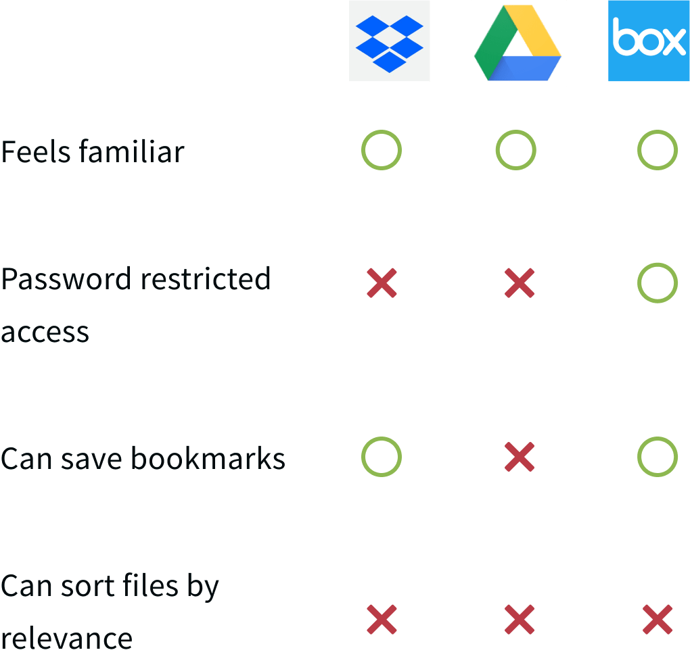
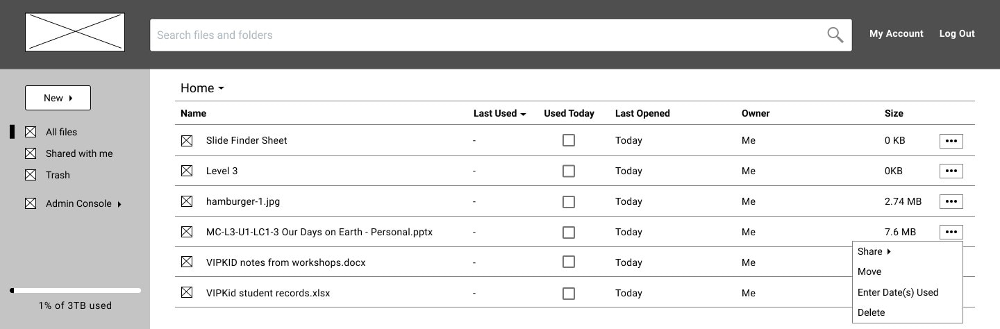

Roles
- UX Research & Testing
- Visual Design
- Brand & Identity
Deliverables
- User surveys
- User personas
- Competitive analysis
- User stories & flows
- Sketched wireframes
- Digital wireframes
- User testing analysis
- Logo sketches
- Style guide
- Hi-fi prototype
Tools
- Google Forms
- draw.io
- Figma
- Invision
- Marvel
- UsabilityHub
- maze.io
Problem
Ever sat down at a restaurant and thought to yourself, “Man! I wish I could remember what I had last time I came here! Was it even good?” Or ever wished you could remember that place where you and your friend ate a couple months ago? Spork is here to help.
Solution
Spork allows users to track (or “spork”) each restaurant visit. By entering things like the date, restaurant, whom they ate with, and ranking each menu item they tried, users can not only remember what they want to, but they can also see statistical insights about their overall dining habits. And who knows? Maybe by seeing what you’ve already tried, you’ll be inspired to try some new dish or restaurant next time.
Research & Strategy
User Surveys
The idea for this app came about from one friend mentioning he wished there were an app similar
to BG Stats (an app that tracks board game plays) for eating out with friends. While it sounded
like a great idea from the get-go, I needed to make sure there was actual interest in it. So, I
conducted a survey that targeted anyone who likes eating out and learned the following.
Over 50% of respondents said they sometimes or often wish they could remember:
60%
what they ordered the last time they went to a restaurant
57%
if they actually liked the item they ordered
54%
the last time they ate at a certain restaurant
Next, I introduced a hypothetical app for tracking restaurant visits and asked users what features would be useful. This really shaped my MVP.

I also learned that most users (92%) would want an app
that implemented predictive text based on location to find
nearby restaurants. Through various comments in the survey, I also discovered compiled
statistics were an attractive feature for this
potential app.
After
introducing users through the above questions to what this app could be, I asked the most
telling question of all:
With over 80% of respondents somewhat interested or very interested, there was no longer any doubt in my mind that this was an app worth creating.
User Personas
I developed two personas to help encapsulate what specific needs both teachers and administrators had. I used these personas as a reference point to ensure my design was meeting their needs.
Alex Reynolds
Urban attorney
Frustrations
- Complicated apps that demand a lot of time
- Can’t share play statistics with friends from within BG Stats app
- Can't track everything like board game plays
Goals
- Quickly track restaurants visits like he does board games
- Remember what NOT to order
- Share stats of restaurant visits with friends
Julia Brown
Rural administrative assistant
Frustrations
- Experiencing poor service or bad food after trekking into the city
- Lack of restaurant choices in town
- Forgetting if she’s already been to a restaurant
Goals
- Be able to reference where she’s already been
- Not go back to a restaurant with poor service
- Try a new dish every time at repeat restaurants
Fiona Andrews
Urban undergrad student
FRUSTRATIONS
- Forgetting what menu items she’s already tried
- Expensive restaurants with mediocre food
- Apps that don’t feel familiar
Goals
- Keep food photos in an intuitive location
- Remember if the cost was really worth it
- Keep track of what she's tried already and with whom she tried it
Competitive Analysis
While waiting for survey results to come in, I also performed a SWOT analysis of three other cloud storage services: Dropbox, Box, and Google Drive. (See link below.) After analyzing my survey results and seeing the specific features teachers needed, I simplified my competitive analysis into a matrix for each feature.
View SWOT analysis
Information Architecture
User Stories & Flows

Next I created paths for the most important tasks teachers or administrators would need to do on PrepHub. These user flows served as the foundations for my wireframes.
Wireframes & Testing
With flows in place, I began sketching rough wireframes for PrepHub. After some
A/B testing with
a design mentor for the landing page, I created hi-fi wireframes using Figma. I turned these
into
a prototype with InVision and administered user testing both in-person and remotely (via screen
sharing on Skype).
While users completed most tasks successfully, I learned from testing that several design
aspects weren't as intuitive as I expected. So, I made several changes to improve usability. The
biggest changes included:
1. Making an ellipsis menu available on every line item on the dashboard, without needing to hover over it
2. Adding a “Used Today” checkbox in every column to make updating the “last used” date easier and more obvious than hiding it in the ellipsis menu
3. Adding names and locations for teachers cited in the testimonials, so they seem more real/relatable

↓

↓
 See wireframe iterationsBranding
Identity Creation
After user research and testing, it was time to get serious about the look and feel of the brand. I wanted my brand to convey ease and straightforwardness. I also wanted it to be as clear as possible from first glance for whom and what the website was intended.
I settled on the name PrepHub because “hub” means “the effective
center of an
activity,
region, or network” and I wanted my website to be the effective host (or center) of all
prep
materials. The logo conveys the hub aspect, with the center apple
clearly
representing
teachers as its intended audience.
The color scheme feels like an elementary school environment. I
chose Lato as my
typeface
because it felt contemporary and easy-to-read.
My working brand typeface was Oswald, but one user pointed out
they would expect an
open, circular
serif style to go along with the elementary school vibe. Since Lato met those needs and
matched
the
body typeface, it was a shoe-in. To ensure consistency and adherence to these ideas across
all
parts of the project, I also made a style guide.
Visual Design
Preference Testing
I wanted to ensure my landing page, the first page people saw, left the best impression. So I executed several preference tests on it using UsabilityHub.
First, I tested photos vs illustrations. With only a 5% difference in opinions, I used testers' comments to determine graphics worked better . Users noted graphics matched the logo aesthetics, felt more modern, and that the photos were too abstract for illustrating each feature.
I also tested different layout combinations for the Testimonials and Plans sections. Testers preferred the second option below, with boxes around each testimonial and a Plans section that had similar boxes to those in the Features section.
Hi-fi Mockups & Testing
Finally, I turned my hi-fi mockups into a prototype on InVision and tested five users, both
in-person and remotely. I made the following discoveries from the tests and implemented
corresponding changes.
1. Some users prefer grid view so I added this view option.
2. I needed to clarify the wording in the modal windows for shared links and opening a doc, xls, or ppt in Open Office.
3. I needed more spacing and color in my left nav bar.
4. The “Used Today” checkbox was self-explanatory to users, but when asked to enter several dates on which a file was used, users tended to gravitate toward the “Last Used” column. I realized from this I would need a couple changes:
a. I implemented a hover state of the “Last Used” title to bring up a small box explaining what it means.
b. I would ask development to enable right clicks to open the ellipsis menu wherever clicked, and a double-click in the “Last Used” column to open the “Enter Date(s) Used” modal window.
view invision prototypeConclusion
Final Thoughts
1. Going into the project, I doubted that I would be able to come up with a strong brand identity since I don’t have a background in art. However, I learned that sketching and mindmapping are extremely valuable brainstorming tools that should not be overlooked. I am extremely pleased with the look of feel of the PrepHub brand, especially its logo and name; it is clean and clearly conveys the site’s audience and purpose.
2. As a former teacher myself, I thought I had a pretty good idea of what teachers needed in cloud storage. However, through user testing, I quickly realized I needed to stop assuming I knew what was best for every user. I witnessed how every user has a different approach to navigating user interfaces. By basing every iteration off of user feedback, PrepHub's design is more useful than I could've ever imagined. I truly wish it had existed when I was teaching.
3. In thinking about further development, I would like more testing participants from my target audience to ensure every detail is as intuitive as possible. I also believe there is opportunity for PrepHub to create its own teacher-focused creative software (for documents, slide decks, etc.) through further research, wireframing, prototyping, and usability testing.